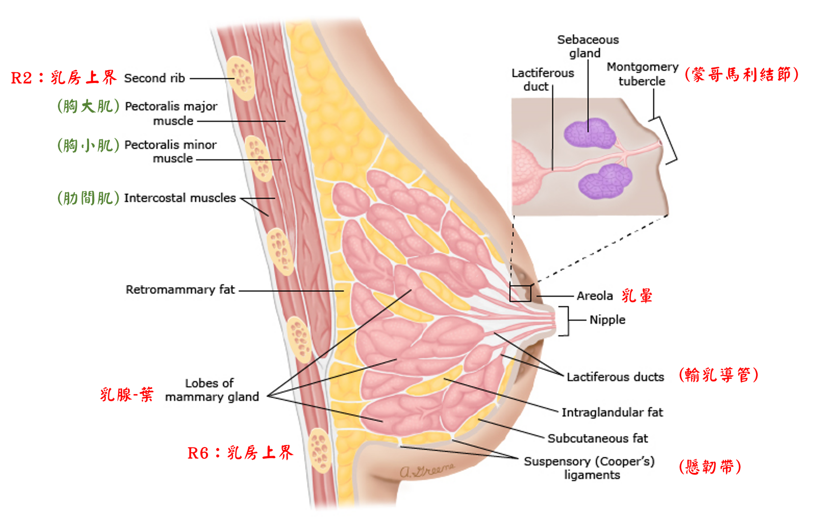

🤱 生殖系統-乳房
乳房(breast)-大體解剖
- 乳房界線：
- 上界：R2
- 下界：R6
- 內界：胸骨外緣
- 外界：前腋腺
- 枯貝氏勤帶(Cooper ligament)=懸帶(suspensory l.)：
乳房以懸韌帶附著於胸大肌之淺筋膜(superficial fascia)
- 乳頭(nipple)：
- 位於第4肋間(R4~R5)
- 含平滑肌及豐富的感覺神經末稍
- 乳頭周圍稍暗之皮膚稱乳暈(areola)，顏色因懷孕而加深
- 蒙哥馬利氏腺(Montgomery)：位於乳暈表面
- 為皮脂腺，分泌物保護並滋潤乳頭
乳房-內部構造
- 乳腺(mammary gland)：
- 複式腺泡型；且為頂漿型汗腺之特化
- 共15〜20葉(lobes)
- 乳汁分泌路徑：
終末小管小葉單位(terminal ductal lobular ,TDLU)：含腺泡(acini = alveolus)及輸出小管(ductules)
→終末導管(terminal duct)[小葉(lobule)]
→輸乳導管(lactiferous duct=segmental duct)[葉(lobe)]：具肌上皮細胞(myoepithelial cell)
→輸乳壺腹(lactiferous sis)
→收集管(collecting duct)
→乳頭(nipple)
- 脂肪等結締組織：脂肪含量為決定乳房大小之最重要因素

★[108-1]乳房-動脈供應
- 腋下A(axillary a)：
- 外側胸A(lat.thoracic a)之外乳枝(lat. mammary br.) ⇒ 外側
- 胸肩峰A(thoracoacromial a)之胸肌枝(pectoral br.) ⇒ 上方
- 內胸A(int.thoracic a)=內乳A(int. mammary a) ⇒ 內側
- 穿透枝(perforating br.)= 內乳枝(med.mammary br.)
- 前肋間A(ant. intercostal a)之前穿透枝(ant. perforating br.)
- 後肋間A(post. intercostal a)之外側皮枝(lat. cutaneous br.)
乳房-靜脈回流
- 腋下V
- 內胸V
- 後肋間V：乳癌易沿後肋間V轉移至脊椎骨(stage IV)
乳房-相關神經
- 乳房神經支配：第4、5、6肋間N
- 長胸N：
- 與側胸動脈(lat. thoracic a)伴行
- 支配前鋸肌(serratus anterior m)
- 肋間臂N(intercostobrachial n.)：肋間N之分枝
- 乳癌腋淋巴清除術：
- 損傷長胸N ⇒ 前鋸肌萎縮 ⇒ 翼形肩胛骨(wing scapula)
- 損傷肋間臂N ⇒ 上臂內側感覺喪失
影響乳房之激素
- 動情激素(estrogen)：乳腺導管&脂肪的生長發育(最重要)
- 黄體激素(progesterone)：乳腺腺泡的生長發育
- 泌乳激素(prolacin)：乳汁製造&乳腺的生長發育
- 催產激素(oxytocin)：乳汁射出
- 吸吮反射(suckling reflex)：吸吮乳頭→催產激素上升
乳房-淋巴引流
- 外側：★腋下淋巴結(axillary LN)(佔75%，最重要)
- 內側：內乳淋巴結(int. mammary LN)=胸骨旁淋巴結(parasternal LN)
- 上方：鎖骨上淋巴結(supraclaricular LN)/鎖骨下淋巴結(level III)
- 下方：前腹壁淋巴結(adbominal wall LN)
- 乳癌：
- 最易轉移至腋下淋巴結[N1(1~3)、N2(4~9)、N3(>10)]
- 轉移至胸骨旁淋巴結、鎖骨上淋巴結(N3)
📖 書本補充：與筆記不同或筆記沒寫到的地方
⚠️
以下為對照書本後整理，筆記原文未更動。書的乳房只有一頁表格，筆記已大致涵蓋，只補幾點。本頁的考題也出現在「主要動脈」或「淋巴系統」頁。
乳房（p.145–146）
- 書的動脈分區：內側＝胸內A；中間＝胸肩峰A的胸支；外側＝胸外側A及肋間後A（與筆記一致）。
- 記憶法：乳房的血液來自附近名稱內有「胸」（thoracic 或 pectoral）的血管。
- 肋下A位在第 12 肋骨下方，不會往上分支供應乳腺（108-1-22）。
- 淋巴：內側 → 胸骨旁淋巴結；外側 → 腋淋巴結。書的提示：腋淋巴結分很多群，不建議逐一背誦。
- 根除性乳房切除術清除腋淋巴結，術後可能造成患側上肢水腫（109-1-22）。
📝 書中歷屆考題（點選答案作答）
101-1-1p.145
乳腺內側的淋巴主要匯入：
104-1-12p.145
乳房外側的淋巴液回流至下列何者？
109-1-22p.146
根除性乳房切除手術 (radical mastectomy)，通常清除下列何者而造成術後患側上肢水腫？
108-1-22p.146
下列何者不負責乳腺之血液供應？
💡 肋下動脈在第 12 肋骨下方，不會往上分支供應乳腺。